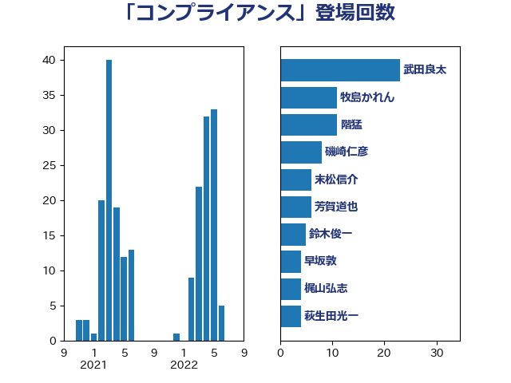

単語「コンプライアンス」

| 武田良太 | 自由民主党 | 23 回 |
| 牧島かれん | 自由民主党 | 11 回 |
| 階猛 | 立憲民主党 | 11 回 |
| 磯崎仁彦 | 自由民主党 | 8 回 |
| 末松信介 | 自由民主党 | 6 回 |
| 芳賀道也 | 国民民主党 | 6 回 |
| 鈴木俊一 | 自由民主党 | 5 回 |
| 早坂敦 | 日本維新の会 | 4 回 |
| 梶山弘志 | 自由民主党 | 4 回 |
| 萩生田光一 | 自由民主党 | 4 回 |
| 大島敦 | 立憲民主党 | 3 回 |
| 岡本あき子 | 立憲民主党 | 3 回 |
| 松川るい | 自由民主党 | 3 回 |
| 牧山ひろえ | 立憲民主党 | 3 回 |
| 福島伸享 | 無所属 | 3 回 |
| 金子恭之 | 自由民主党 | 3 回 |
| 上川陽子 | 自由民主党 | 2 回 |
| 吉川沙織 | 立憲民主党 | 2 回 |
| 國重徹 | 公明党 | 2 回 |
| 小沢雅仁 | 立憲民主党 | 2 回 |
| 小沼巧 | 立憲民主党 | 2 回 |
| 杉久武 | 公明党 | 2 回 |
| 菅義偉 | 自由民主党 | 2 回 |
| 辻元清美 | 立憲民主党 | 2 回 |
| たがや亮 | れいわ新選組 | 1 回 |
| 串田誠一 | 日本維新の会 | 1 回 |
| 伊藤岳 | 日本共産党 | 1 回 |
| 塩川鉄也 | 日本共産党 | 1 回 |
| 小倉將信 | 自由民主党 | 1 回 |
| 小山展弘 | 立憲民主党 | 1 回 |
| 山添拓 | 日本共産党 | 1 回 |
| 岩谷良平 | 日本維新の会 | 1 回 |
| 川田龍平 | 立憲民主党 | 1 回 |
| 本村伸子 | 日本共産党 | 1 回 |
| 梅村聡 | 日本維新の会 | 1 回 |
| 森屋隆 | 立憲民主党 | 1 回 |
| 横沢高徳 | 立憲民主党 | 1 回 |
| 橋本聖子 | 無所属 | 1 回 |
| 武井俊輔 | 自由民主党 | 1 回 |
| 江田憲司 | 立憲民主党 | 1 回 |
| 河野義博 | 公明党 | 1 回 |
| 湯原俊二 | 立憲民主党 | 1 回 |
| 牧義夫 | 立憲民主党 | 1 回 |
| 田村智子 | 日本共産党 | 1 回 |
| 田村貴昭 | 日本共産党 | 1 回 |
| 福山哲郎 | 立憲民主党 | 1 回 |
| 稲富修二 | 立憲民主党 | 1 回 |
| 笠井亮 | 日本共産党 | 1 回 |
| 若林健太 | 自由民主党 | 1 回 |
| 菊田真紀子 | 立憲民主党 | 1 回 |
| 逢坂誠二 | 立憲民主党 | 1 回 |
| 鈴木義弘 | 国民民主党 | 1 回 |
| 長友慎治 | 国民民主党 | 1 回 |
| 高良鉄美 | 無所属 | 1 回 |
| 麻生太郎 | 自由民主党 | 1 回 |